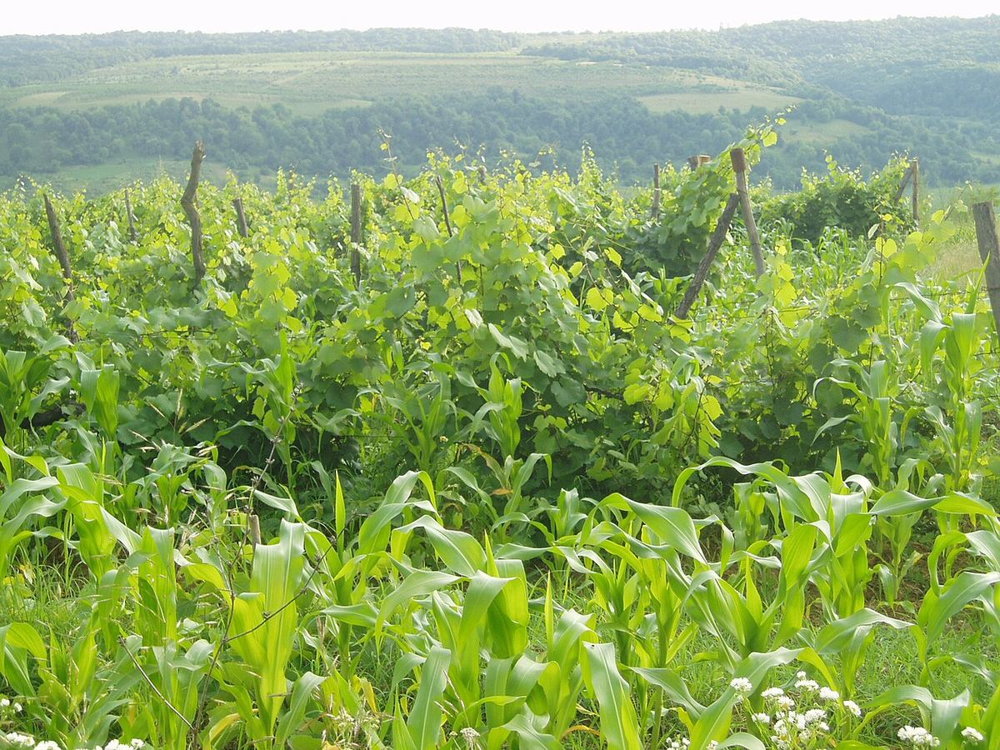

Moldova
Moldova, between Romania and Ukraine, is one of the countries in the world where wine carries the greatest weight in the economy and culture. Its hills, between the Prut and Dniester rivers, produce reds, whites and sparkling wines from international and native varieties such as Fetească and Rara Neagră.

History
Vines have been grown for millennia in what is now the Republic of Moldova, which was part of the medieval principality of Moldavia, where monasteries and the nobility owned important vineyards. In 1812 the eastern part of the principality, known as Bessarabia, passed to the Russian Empire, and during the nineteenth century French varieties were planted and wineries were founded with the help of foreign specialists; Purcari, for example, dates from 1827. As in the rest of Europe, phylloxera devastated the vineyards at the end of that century.
In the Soviet era Moldova became one of the main suppliers of wine, sparkling wine and brandy to the Soviet Union, with large industrial complexes and an extensive vineyard area. The anti-alcohol campaign launched in 1985 led to the uprooting of many vineyards. After independence in 1991 the sector remained heavily dependent on the Russian market until the embargoes imposed by Russia in 2006 and 2013 forced it to seek new markets, above all in the European Union and Asia. Since then many wineries have invested in vineyards, technology and quality, and the country promotes its wines under a common brand and holds a national wine festival every year in early October.
Climate and soils
Moldova has a moderate continental climate, with cold winters, warm summers and long autumns, tempered by the relative proximity of the Black Sea and by the valleys of the Prut and Dniester. The landscape consists of gentle hills, often forested in the centre of the country. Very fertile chernozem soils predominate, along with grey forest soils and limestone subsoils. At Cricova and Mileștii Mici, near Chișinău, old underground limestone quarries have been turned into vast underground cellars, with stable temperature and humidity all year round.
Regions
The country has three protected geographical indications for wine. Codru, in the centre around Chișinău, is an area of wooded hills and a slightly cooler climate, known above all for its whites and sparkling wines. Ștefan Vodă, in the south-east near the Dniester and the Black Sea, is valued for its reds; Purcari is located there. Valul lui Traian, in the south-west, is the warmest area and produces mainly reds. There is also a specific geographical indication, Divin, for wine brandy. The colder north of the country is devoted mainly to grapes for distillation and simple wines.
Grapes and styles
International varieties account for most of the vineyard area: Cabernet Sauvignon, Merlot, Pinot Noir, Chardonnay, Sauvignon Blanc and Aligoté, along with the Georgian Rkatsiteli, planted in large quantities in the Soviet era. Among the grapes of local tradition the most notable are Fetească Albă, Fetească Regală, Fetească Neagră and Rara Neagră, called Băbească Neagră in Romania, as well as Moldovan crosses such as Viorica. Saperavi, also of Georgian origin, is part of some historic red blends. Moldova has a long tradition of sparkling wine, made both by the traditional method and by other methods, and produces structured reds, fresh whites and dessert wines.
Regulations
Moldovan wine law, largely aligned with the European model, distinguishes wines with a protected designation of origin, wines with a protected geographical indication and wines without a geographical indication. The three wine geographical indications, Codru, Ștefan Vodă and Valul lui Traian, are managed by producer associations that set the authorised varieties and production conditions.